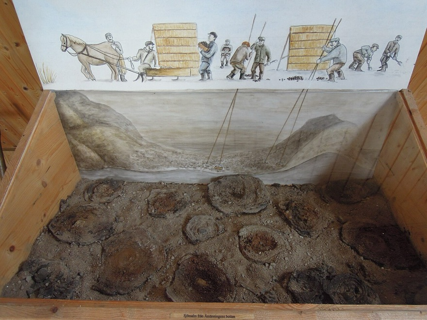
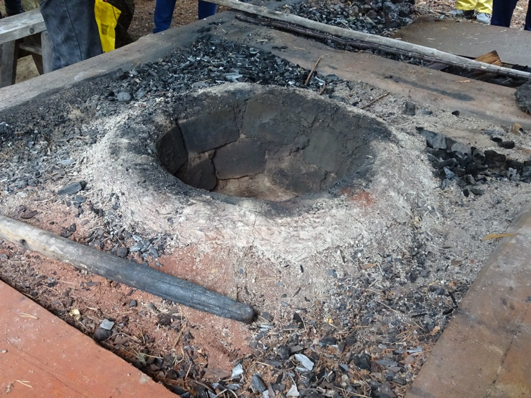
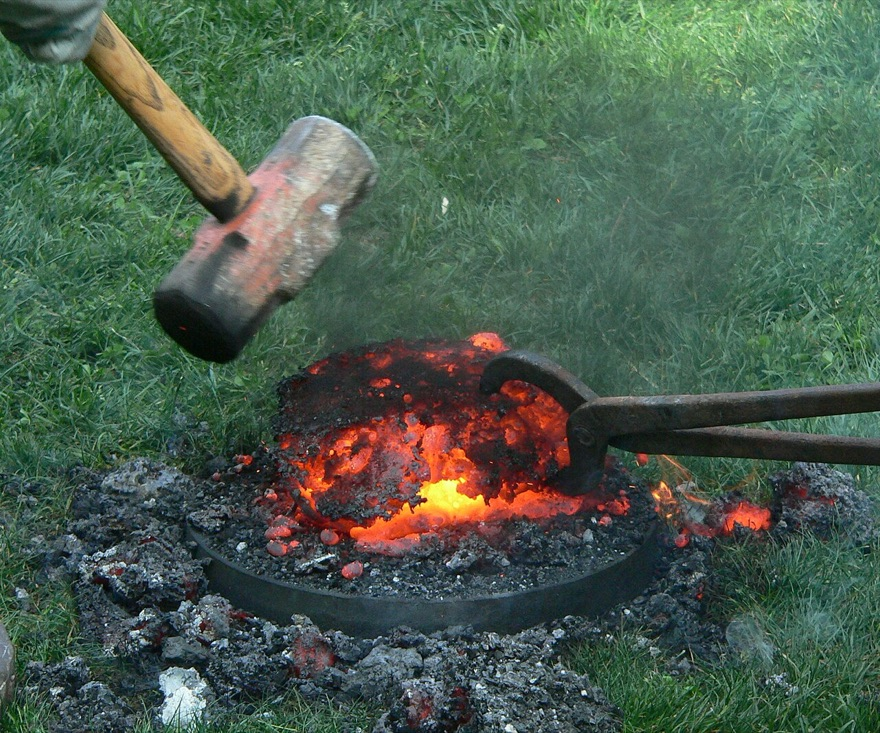
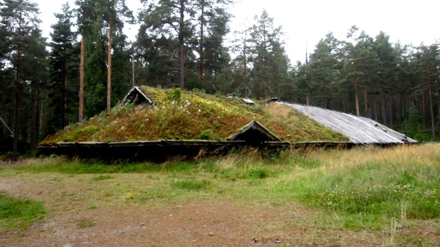
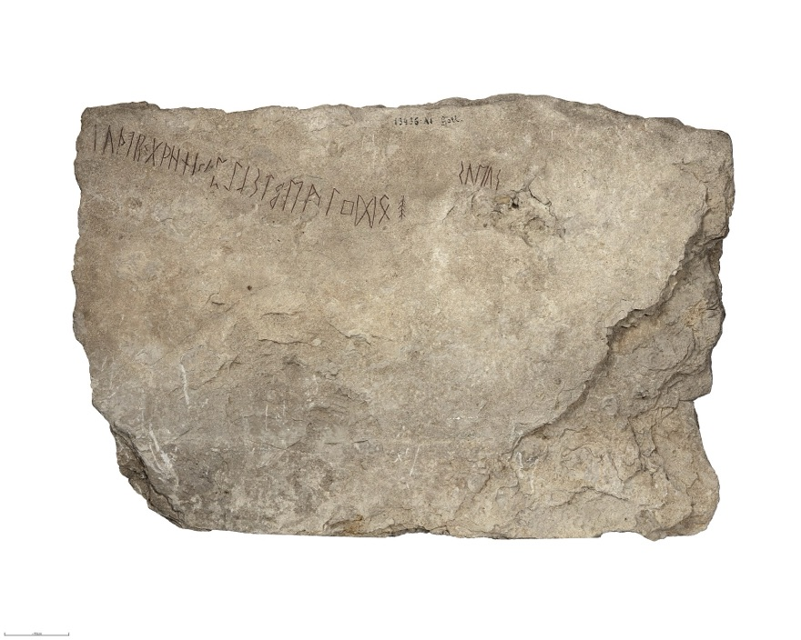
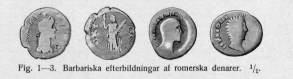

<title>Från järnålder till vikingatid</title>
<meta name="claude:viewport-fit-sides" content="cover">
<link rel="stylesheet" href="https://fonts.googleapis.com/css2?family=Bricolage+Grotesque:opsz,wght@12..96,500;12..96,700;12..96,800&family=Atkinson+Hyperlegible:ital,wght@0,400;0,700;1,400&display=swap">
<style>
/* Layout: enspaltig lektionssida. Epoktema: höstnatt vid blästerugnen; järn, rost, kol och glöd. */
:root{
  --bg:#f2efe7;
  --surface:#fbf9f2;
  --ink:#272219;
  --muted:#6d6353;
  --accent:#9a4526;
  --accent-soft:#f0ded2;
  --gold:#a87b24;
  --gold-soft:#f3e5c6;
  --band:#e8e4d4;
  --line:#ddd3bc;
  --sky1:#3f4a5c;
  --sky2:#c98a5a;
  --ground:#2e2a22;
  --house:#1f1c16;
  --glow:#f2a541;
  --spark:#ffcf7a;
  --slab:#6b6557;
  --runecarv:#d9cfb8;
  --rune:#7a3b20;
  --display:"Bricolage Grotesque","Avenir Next","Trebuchet MS",sans-serif;
  --body:"Atkinson Hyperlegible","Verdana",system-ui,sans-serif;
}
@media (prefers-color-scheme: dark){
  :root:not([data-theme="light"]){
    --bg:#13100b; --surface:#1f1a12; --ink:#eee6d4; --muted:#ada28a;
    --accent:#d98a5e; --accent-soft:#33211a;
    --gold:#dfa84e; --gold-soft:#3a2c12;
    --band:#262218; --line:#463e2b;
    --sky1:#1a2230; --sky2:#5b3a28;
    --ground:#17140e; --house:#0d0b08;
    --glow:#f2a541; --spark:#ffcf7a;
    --slab:#3a362c; --runecarv:#8d8266;
    --rune:#d98a5e;
    color-scheme:dark;
  }
}
:root[data-theme="dark"]{
  --bg:#13100b; --surface:#1f1a12; --ink:#eee6d4; --muted:#ada28a;
  --accent:#d98a5e; --accent-soft:#33211a;
  --gold:#dfa84e; --gold-soft:#3a2c12;
  --band:#262218; --line:#463e2b;
  --sky1:#1a2230; --sky2:#5b3a28;
  --ground:#17140e; --house:#0d0b08;
  --glow:#f2a541; --spark:#ffcf7a;
  --slab:#3a362c; --runecarv:#8d8266;
  --rune:#d98a5e;
  color-scheme:dark;
}
*{box-sizing:border-box}
body{
  background:var(--bg); color:var(--ink);
  font-family:var(--body); font-size:17px; line-height:1.6;
  margin:0;
  padding-left:max(16px, env(safe-area-inset-left, 0px));
  padding-right:max(16px, env(safe-area-inset-right, 0px));
  padding-block:0 48px;
}
main{max-width:680px; margin:0 auto}
h1,h2,h3{font-family:var(--display); line-height:1.12; text-wrap:balance; margin:0}
p{margin:0}
a{color:var(--accent)}

/* ---------- Hero: höstnatt vid blästerugnen ---------- */
.hero{position:relative; overflow:hidden; border-radius:0 0 24px 24px;
  background:linear-gradient(180deg, var(--sky1) 0%, var(--bg) 160%);
  margin:0 -4px; padding:36px 22px 0}
.hero .eyebrow, .hero h1{color:#f3ecdd}
.hero .lede{color:#cfc5ae}
.eyebrow{font-size:12.5px; letter-spacing:.16em; text-transform:uppercase; color:var(--gold); font-weight:700; margin-bottom:10px}
.hero .eyebrow{padding-right:52px}
.theme{position:absolute; top:16px; right:16px; z-index:2; width:38px; height:38px; border-radius:50%; border:1.5px solid var(--line);
  background:var(--surface); color:var(--muted); font-size:16px; cursor:pointer; display:grid; place-items:center; padding:0}
.theme:hover{border-color:var(--accent); color:var(--accent)}
.theme:focus-visible{outline:3px solid var(--accent); outline-offset:2px}
.hero h1{font-size:clamp(32px,7.5vw,48px); font-weight:800}
.hero .lede{margin-top:14px; max-width:48ch}
.scape{display:block; width:100%; height:auto; margin-top:18px}
@media (prefers-reduced-motion: no-preference){
  .flick{animation:glow 3.2s ease-in-out infinite}
  @keyframes glow{0%,100%{opacity:.55}50%{opacity:1}}
  .spark{animation:rise 2.6s ease-out infinite}
  .spark.s2{animation-delay:.9s}
  .spark.s3{animation-delay:1.7s}
  @keyframes rise{0%{opacity:0; transform:translateY(10px)}25%{opacity:1}100%{opacity:0; transform:translateY(-30px)}}
}
@media (prefers-reduced-motion: reduce){ .flick{opacity:.9} .spark{opacity:.5} }

/* ---------- Tidslinje ---------- */
.timeline{overflow-x:auto; padding:18px 22px 16px; margin:0 -4px}
.timeline-track{position:relative; display:flex; min-width:660px; max-width:680px; margin:0 auto}
.timeline-track::before{content:""; position:absolute; top:6px; left:calc(100%/14); right:calc(100%/14); height:2px; background:var(--line)}
.t-stop{flex:1; position:relative; text-align:center; font-size:12px; line-height:1.35; color:var(--muted); padding-top:20px}
.t-stop::after{content:""; position:absolute; top:1px; left:50%; transform:translateX(-50%); width:11px; height:11px; border-radius:50%; background:var(--line)}
.t-stop.done::after{background:var(--muted)}
.t-stop.here{color:var(--ink); font-weight:700}
.t-stop.here::after{background:var(--gold); width:15px; height:15px; top:-1px; box-shadow:0 0 0 4px var(--gold-soft)}
.t-stop .when{display:block; font-size:11px; opacity:.75; font-weight:400}
.youare{display:inline-block; margin-top:5px; font-size:10.5px; font-weight:700; letter-spacing:.08em; text-transform:uppercase;
  background:var(--gold); color:var(--surface); border-radius:999px; padding:2px 9px}

/* ---------- Sektioner ---------- */
section{margin-top:44px}
.kicker{display:flex; align-items:center; gap:10px; font-size:12.5px; letter-spacing:.14em; text-transform:uppercase; font-weight:700; color:var(--accent); margin-bottom:10px}
.kicker::after{content:""; flex:1; height:1px; background:var(--line)}
section h2{font-size:clamp(23px,5vw,30px); font-weight:700; margin-bottom:12px}
section p + p{margin-top:12px}
.note{font-size:13.5px; color:var(--muted); font-style:italic}

/* ---------- Figurer med foton ---------- */
.fig{position:relative; background:var(--surface); border:1px solid var(--line); border-radius:14px; padding:10px; margin:0}
.fig img{width:100%; height:auto; display:block; border-radius:9px}
.fig .tag{position:absolute; top:18px; left:18px; font-size:10.5px; font-weight:700; letter-spacing:.09em; text-transform:uppercase;
  background:var(--ink); color:var(--bg); border-radius:999px; padding:3px 10px; opacity:.92}
.fig figcaption{font-size:13.5px; color:var(--muted); margin-top:9px; line-height:1.5; padding:0 2px}
.fig .credit{display:block; margin-top:3px; font-size:11.5px; color:var(--muted); opacity:.8}
.figwide{margin-top:16px}
.figrow{display:grid; grid-template-columns:repeat(auto-fit,minmax(195px,1fr)); gap:12px; margin-top:16px; align-items:start}

/* ---------- Berättelsekort ---------- */
.story{background:var(--surface); border:1px solid var(--line); border-radius:16px; padding:22px 24px; margin-top:16px}
.story .scene-tag{display:inline-block; font-size:11.5px; font-weight:700; letter-spacing:.08em; text-transform:uppercase;
  background:var(--gold-soft); color:var(--gold); border-radius:999px; padding:3px 11px; margin-bottom:12px}
.story p + p{margin-top:10px}
.story p:nth-of-type(1)::first-letter{font-family:var(--display); font-weight:800; font-size:3.1em; float:left; line-height:.85; padding:2px 8px 0 0; color:var(--accent)}

/* ---------- Runskrivaren ---------- */
.runebox{background:var(--surface); border:1px solid var(--line); border-radius:16px; padding:20px 22px; margin-top:16px}
.runebox label{display:block; font-family:var(--display); font-weight:700; margin-bottom:8px}
.runebox input{width:100%; font-family:var(--body); font-size:19px; padding:10px 14px;
  border:1.5px solid var(--line); border-radius:10px; background:var(--bg); color:var(--ink)}
.runebox input:focus-visible{outline:3px solid var(--accent); outline-offset:1px}
.runeout{display:flex; flex-wrap:wrap; gap:4px 8px; align-items:flex-end; margin-top:16px;
  padding:16px 14px 10px; border-radius:12px; background:var(--band); min-height:100px}
.rn{display:flex; flex-direction:column; align-items:center; gap:1px}
.rn svg{display:block}
.rn .lat{font-size:11px; color:var(--muted)}
.runeout .tom{color:var(--muted); font-style:italic; font-size:14px; align-self:center}
.runebox .note{margin-top:12px}

/* ---------- Italien-band ---------- */
.italy{background:var(--gold-soft); border-radius:16px; padding:22px 24px; margin-top:16px}
.italy .kicker{color:var(--gold)}
.italy .kicker::after{background:color-mix(in srgb, var(--gold) 30%, transparent)}
.italy p + p{margin-top:12px}
.italy .fig{background:var(--surface); margin-top:14px}

/* ---------- Ordlista ---------- */
.words{display:grid; gap:10px; margin-top:16px}
.word{background:var(--surface); border:1px solid var(--line); border-left:5px solid var(--accent); border-radius:12px; padding:12px 16px}
.word b{font-family:var(--display); font-size:18px}
.word span{color:var(--muted); font-size:15px; display:block}

/* ---------- Föräldradel ---------- */
details.parents{margin-top:48px; border-top:1px dashed var(--line); padding-top:14px; color:var(--muted); font-size:14px}
details.parents summary{cursor:pointer; font-weight:700; color:var(--muted)}
details.parents summary:focus-visible{outline:3px solid var(--accent); outline-offset:2px}
details.parents h3{font-size:15px; margin:16px 0 6px; color:var(--ink)}
details.parents ul{margin:6px 0 0; padding-left:20px}
details.parents li{margin-top:4px}

footer{margin-top:36px; padding-top:16px; border-top:1px solid var(--line); color:var(--muted); font-size:14px;
  display:flex; justify-content:space-between; gap:12px; flex-wrap:wrap}
</style>
<main>

<header class="hero" id="topp">
  <button type="button" id="themeBtn" class="theme" aria-label="Växla mellan ljust och mörkt läge"></button>
  <p class="eyebrow">Svensk historia &middot; Del 1 &middot; Lektion 4</p>
  <h1>Från järnålder till vikingatid</h1>
  <p class="lede">Förra gången kom metallen hit över halva Europa. Den här gången hittar människorna den hemma &ndash; i myren bakom byn. Och två saker till är på väg: de allra första bokstäverna, och blänkande silvermynt från ett rike som hette Rom.</p>
  <svg class="scape" viewBox="0 0 800 200" role="img" aria-label="Illustration: höstnatt under järnåldern. Ett långhus med glödande dörröppning, en blästerugn som sprutar gnistor mot stjärnhimlen, fullmåne och en stenhäll med ristade runor.">
    <defs>
      <linearGradient id="skygrad" x1="0" y1="0" x2="0" y2="1">
        <stop offset="0" style="stop-color:var(--sky1)"/>
        <stop offset="1" style="stop-color:var(--sky2)"/>
      </linearGradient>
    </defs>
    <rect x="0" y="0" width="800" height="200" fill="url(#skygrad)"/>
    <g fill="var(--spark)" opacity=".75">
      <circle cx="90" cy="30" r="1.4"/><circle cx="152" cy="56" r="1.2"/><circle cx="262" cy="24" r="1.4"/>
      <circle cx="420" cy="42" r="1.2"/><circle cx="560" cy="20" r="1.4"/><circle cx="614" cy="58" r="1.2"/><circle cx="752" cy="74" r="1.2"/>
    </g>
    <circle cx="692" cy="38" r="13" fill="var(--spark)" opacity=".85"/>
    <!-- marken -->
    <path d="M0 150 C200 140 520 158 800 146 L800 200 L0 200 Z" fill="var(--ground)"/>
    <!-- kalt träd -->
    <g stroke="var(--house)" stroke-width="4" fill="none" stroke-linecap="round">
      <path d="M62 150 V116 M62 126 L48 110 M62 120 L76 104 M62 136 L50 130"/>
    </g>
    <!-- långhus -->
    <path d="M100 151 C130 100 150 90 235 88 C320 90 340 100 370 151 Z" fill="var(--house)"/>
    <circle cx="234" cy="138" r="20" fill="var(--glow)" opacity=".15"/>
    <rect x="225" y="127" width="18" height="24" rx="2" fill="var(--glow)" opacity=".9"/>
    <path d="M235 84 C229 72 241 64 235 52" stroke="var(--slab)" stroke-width="3" fill="none" stroke-linecap="round" opacity=".6"/>
    <!-- blästerugn -->
    <path d="M475 151 C475 122 485 108 500 108 C515 108 525 122 525 151 Z" fill="var(--house)"/>
    <circle cx="500" cy="104" r="17" fill="var(--glow)" opacity=".22" class="flick"/>
    <ellipse cx="500" cy="108" rx="7" ry="4" fill="var(--glow)" class="flick"/>
    <g fill="var(--spark)">
      <circle class="spark" cx="497" cy="96" r="2"/>
      <circle class="spark s2" cx="505" cy="92" r="2"/>
      <circle class="spark s3" cx="500" cy="98" r="1.6"/>
    </g>
    <!-- stenhäll med runor -->
    <path d="M640 151 L648 108 L706 104 L716 151 Z" fill="var(--slab)"/>
    <g stroke="var(--runecarv)" stroke-width="3" fill="none" stroke-linecap="round" stroke-linejoin="round">
      <path d="M656 142 V116 M656 123 L665 117 M656 131 L665 125"/>
      <path d="M671 142 L671 119 L680 126 L680 142"/>
      <path d="M687 142 V116 M687 122 L695 129 L687 136"/>
      <path d="M701 142 V116 M701 120 L709 126 M701 127 L709 133"/>
    </g>
  </svg>
</header>

<nav class="timeline" aria-label="Tidslinje över hela kursen">
  <div class="timeline-track">
    <div class="t-stop done">Isen släpper taget<span class="when">ca 14 000 år sedan</span></div>
    <div class="t-stop done">De första bönderna<span class="when">ca 6 000 år sedan</span></div>
    <div class="t-stop done">Bronsåldern<span class="when">ca 3 500 år sedan</span></div>
    <div class="t-stop here">Järnåldern<span class="when">ca 2 000 år sedan</span><br><span class="youare">du är här</span></div>
    <div class="t-stop">Vikingatiden<span class="when">ca 1 100 år sedan</span></div>
    <div class="t-stop">Medeltiden<span class="when">ca 800 år sedan</span></div>
    <div class="t-stop">Idag<span class="when">2026</span></div>
  </div>
</nav>

<section id="gata">
  <p class="kicker">En gåta</p>
  <h2>Metallen i myren</h2>
  <p>Minns du bronset? Varenda bit måste bytas till sig från andra sidan Europa. Men för ungefär 2&nbsp;500 år sedan började människorna här med en ny metall: järn. Och här är gåtan &ndash; järnmalm bröt nästan ingen ur berget på den tiden. Ändå fick vanliga bondfamiljer plötsligt yxor, knivar och liar av metall, utan att vänta på båtar söderifrån. Var hittade de järnet?</p>
  <p>Svaret låg och väntade alldeles i närheten: i myren &ndash; och på sjöarnas botten.</p>
  <figure class="fig figwide">
    <span class="tag">Museiutställning</span>
    
    <figcaption>Sjömalm från botten av sjön Åmänningen i Västmanland. Järnet samlas av sig självt till rostbruna klumpar i myrar och sjöar &ndash; myrmalm. Målningen visar hur man hämtade den: på vintern, genom hål i isen.
      <a class="credit" href="https://commons.wikimedia.org/wiki/File:Dunshammar_myrmalm_%C3%84ngelsberg.JPG">Dunshammars järnåldersmuseum. Foto: Dependability &middot; CC BY-SA 3.0</a></figcaption>
  </figure>
</section>

<section id="berattelse">
  <p class="kicker">Berättelsen</p>
  <h2>Natten vid ugnen</h2>
  <p>Att göra metall av rostbruna klumpar var ett hantverk som tog flera dygn. Det krävde en ugn av lera, säckar med träkol &ndash; och någon som vakade hela natten.</p>
  <div class="story">
    <span class="scene-tag">Påhittad scen &ndash; byggd på riktiga fynd</span>
    <p>Tänk dig en kall höstnatt för ungefär 2&nbsp;000 år sedan, i en by i det som nu är Västmanland. En pojke får för första gången vara uppe hela natten. I flera dagar har familjen rostat myrmalm över eld och staplat träkol i leraugnen. Nu turas alla om att trampa blåsbälgen, timme efter timme. Ugnen väser, och lågorna som slår ut ur toppen skiftar i blått och gult.</p>
    <p>I gryningen bryter morfar upp ugnens sida med en stång. Därinne glöder en klump, som en liten sol. Järnet. Det ser inte mycket ut för världen &ndash; grått och knöligt. Men pojken vet vad det betyder: en ny yxa, en ny lie, knivar till alla. Och malmen hämtade de själva ur myren bakom byn.</p>
  </div>
  <div class="figrow">
    <figure class="fig">
      <span class="tag">Rekonstruktion</span>
      
      <figcaption>En blästerugn som forskare byggt och eldat vid Röda jorden i Riddarhyttan i Västmanland &ndash; en plats där människor gjorde järn redan för över 2&nbsp;000 år sedan. Här är ugnen öppnad efteråt: gropen är klädd med lera, och runt om ligger träkol och aska.
        <a class="credit" href="https://commons.wikimedia.org/wiki/File:R%C3%B6da_Jorden_rekonstruerad_bl%C3%A4sterugn.jpg">Foto: Dependability &middot; CC BY-SA 4.0</a></figcaption>
    </figure>
    <figure class="fig">
      <span class="tag">Nutida försök</span>
      
      <figcaption>Så här ser järnet ut när det just kommit ut ur ugnen: en glödande, porös klump som måste hamras ren från slagg. Bilden är från ett nutida försök med samma gamla metod.
        <a class="credit" href="https://commons.wikimedia.org/wiki/File:Iron_bloom.jpg">Foto: Morgan Riley &middot; CC BY-SA 3.0</a></figcaption>
    </figure>
    <figure class="fig">
      <span class="tag">Rekonstruktion</span>
      
      <figcaption>Ett långhus som det pojken bodde i, återuppbyggt vid Gene fornby utanför Örnsköldsvik &ndash; ovanpå resterna av en riktig järnåldersgård. Människor och djur bodde under samma tak.
        <a class="credit" href="https://commons.wikimedia.org/wiki/File:L%C3%A5nghuset_vid_Gene_fornby_fr%C3%A5n_sydost.jpg">Foto: Ångermanlands fornminnesförening &middot; CC BY-SA 4.0</a></figcaption>
    </figure>
  </div>
</section>

<section id="runor">
  <p class="kicker">Prova själv</p>
  <h2>Skriv med runor</h2>
  <p>Järnåldersfolket fick något mer som var nytt: bokstäver. De kallas runor och är byggda av raka streck, lätta att rista i trä, ben och sten. Skriv ett ord i rutan, så ristas det med samma runrad som på Kylverstenen &ndash; den får du se strax.</p>
  <div class="runebox">
    <label for="runeInput">Skriv ditt namn eller ett ord</label>
    <input id="runeInput" type="text" maxlength="24" value="järn" autocomplete="off" spellcheck="false">
    <div id="runeOut" class="runeout" aria-live="polite"></div>
    <p class="note">Ungefärligt, så klart: runristarna stavade som det lät. Å och ä skrivs här med a-runan, ö med o-runan, och c, q, x och z med hur de låter. Dubbla bokstäver ristade man bara en gång &ndash; och <em>th</em> och <em>ng</em> hade faktiskt egna runor.</p>
  </div>
</section>

<section id="hurvetvi">
  <p class="kicker">Detektivarbetet</p>
  <h2>Hur vet vi det?</h2>
  <p>När järn smälts fram blir det över en stenhård klump skräp som kallas slagg. Sådana slagghögar har hittats på tusentals platser i Sverige, från Skåne till Norrland &ndash; varje hög är ett kvitto: <em>här gjorde någon järn</em>. Träkolet i de gamla ugnarna går dessutom att åldersbestämma.</p>
  <p>Och runorna? Världens äldsta kompletta runrad ligger ristad på en gotländsk stenhäll &ndash; Kylverstenen, från omkring år 400. Någon ristade alla 24 runorna i ordning, kanske för att öva sig. Stenen hittades som lock till en grav.</p>
  <figure class="fig figwide">
    <span class="tag">Riktigt fynd</span>
    
    <figcaption>Kylverstenen från Stånga på Gotland, ungefär 1&nbsp;600 år gammal. Titta längst upp till vänster: där står hela runraden, med samma runor som i runskrivaren ovanför. Idag finns stenen på Historiska museet i Stockholm.
      <a class="credit" href="https://commons.wikimedia.org/wiki/File:Kylverstenen_-_Historiska_museet_-_DIG_61030.jpg">Foto: Helena Bonnevier, Historiska museet/SHM &middot; CC BY-SA 4.0</a></figcaption>
  </figure>
</section>

<section id="italien">
  <div class="italy">
    <p class="kicker">Samtidigt i Italien</p>
    <h2>Mynt från Rom i gotländsk jord</h2>
    <p>Medan järnugnarna glödde här växte en liten by på sju kullar i Italien till världens mäktigaste rike: Rom. Romarnas soldater kom aldrig hit upp &ndash; men deras saker kom. I svensk jord har man hittat över 7&nbsp;000 romerska silvermynt, denarer, och nästan alla på Gotland. Mynt som präglades i Rom för snart 2&nbsp;000 år sedan gick ur hand till hand, tills de hamnade i en gotländsk åker.</p>
    <p>Romarna hade också hört talas om oss. År 98 skrev historikern Tacitus om <em>svionerna</em>, ett folk långt uppe i norr med starka skepp. Det är allra första gången någon nämner människorna här i skrift. Och forskarna tror att den som hittade på runorna hade sett romarnas och grekernas bokstäver &ndash; själva idén att skriva kom alltså söderifrån.</p>
    <figure class="fig">
      <span class="tag">Riktiga fynd</span>
      
      <figcaption>Silvermynt funna vid Sigdes på Gotland, avbildade år 1907. Och titta noga: det här är faktiskt <em>efterbildningar</em> &ndash; någon utanför romarriket härmade de riktiga denarerna. Så eftertraktade var romarnas mynt.
        <a class="credit" href="https://commons.wikimedia.org/wiki/File:Roman_denarii_from_Sigdes.png">Ur Rosa Norström 1907 &middot; public domain</a></figcaption>
    </figure>
  </div>
</section>

<section id="ord">
  <p class="kicker">Tre svenska ord</p>
  <h2>Ta med dig orden</h2>
  <div class="words">
    <div class="word"><b>järn</b><span>metallen som gjorde verktyg billiga nog för alla &ndash; och som vi fortfarande bygger världen av</span></div>
    <div class="word"><b>myrmalm</b><span>rostbruna klumpar av järn som samlas av sig självt i myrar och på sjöbottnar</span></div>
    <div class="word"><b>runor</b><span>de första nordiska skrivtecknen, byggda av raka streck för att vara lätta att rista</span></div>
  </div>
</section>

<details class="parents">
  <summary>För föräldern: källor, tidsplan och osäkerheter</summary>
  <h3>Förslag på tidsplan (ca 30 min tillsammans)</h3>
  <ul>
    <li>3 min &ndash; gåtan och myrmalmsbilden</li>
    <li>7 min &ndash; berättelsen om natten vid ugnen; de tre bilderna</li>
    <li>8 min &ndash; runskrivaren: skriv namn på hela familjen</li>
    <li>5 min &ndash; detektivarbetet och Kylverstenen</li>
    <li>5 min &ndash; Italien: denarerna och Tacitus</li>
    <li>2 min &ndash; orden</li>
  </ul>
  <h3>Källor</h3>
  <ul>
    <li>Hennius m.fl. 2025, <em>Fornvännen</em>: uppdaterad kronologi för blästbruket &ndash; järn framställdes i Sverige redan från ca 1000 f.Kr., och tekniken blev vanlig under järnåldern</li>
    <li>Dunshammars järnåldersmuseum (Ängelsberg) och Röda jorden (Riddarhyttan): blästbruksplatser i Västmanland med dateringar ca 400&ndash;200 f.Kr.</li>
    <li>Historiska museet (SHM): Kylverstenen (G 88) från Stånga, Gotland, ca 400 e.Kr. &ndash; äldsta kända kompletta äldre futharken</li>
    <li>Stockholms universitet, numismatiska forskningsgruppen: 7&nbsp;756 romerska denarer funna i Sverige, varav 6&nbsp;578 på Gotland; flertalet präglade ca 50&ndash;193 e.Kr.</li>
    <li>Tacitus, <em>Germania</em> (år 98), kapitel 44: suionerna/svionerna och deras flottor</li>
    <li>Vimosefynden (Fyn, Danmark): kammen med inskriften <em>harja</em>, ca år 160 &ndash; äldsta säkert daterade runinskriften. Danmark och Sverige hörde till samma kulturkrets, så fynden berättar om skriftens ankomst även här</li>
    <li>Gene fornby (Örnsköldsvik): utgrävd järnåldersgård, ca 100&ndash;600 e.Kr., med rekonstruerat långhus</li>
  </ul>
  <h3>Bildkällor (alla fria licenser, länkade i bildtexterna)</h3>
  <ul>
    <li>Sjömalm, Dunshammars museum &ndash; foto Dependability, CC BY-SA 3.0</li>
    <li>Rekonstruerad blästerugn, Röda jorden &ndash; foto Dependability, CC BY-SA 4.0</li>
    <li>Glödande järnklump (nutida försök) &ndash; foto Morgan Riley, CC BY-SA 3.0</li>
    <li>Långhuset vid Gene fornby &ndash; foto Ångermanlands fornminnesförening, CC BY-SA 4.0</li>
    <li>Kylverstenen &ndash; foto Helena Bonnevier, Historiska museet/SHM, CC BY-SA 4.0</li>
    <li>Mynt från Sigdes, Gotland &ndash; ur Rosa Norström, &rdquo;Romerskt myntfynd från Sigdes i Burs s:n, Gotland&rdquo; (1907), public domain</li>
  </ul>
  <h3>Osäkerheter och förenklingar</h3>
  <ul>
    <li>Exakt när järnframställningen började här omprövas just nu: nya dateringar pekar på att de första försöken gjordes redan under bronsåldern. &rdquo;För ungefär 2&nbsp;500 år sedan&rdquo; i gåtan syftar på när järnet blev vanligt.</li>
    <li>Varifrån runorna fick sin form är omdiskuterat (latinskt, grekiskt eller norditaliskt alfabet som förebild); att idén kom från Medelhavsvärlden är brett accepterat. Runskrivarens stavning av å, ä, ö, y med flera är en pedagogisk förenkling.</li>
    <li>Varför så många denarer hamnade just på Gotland vet ingen säkert: handel, sold till krigare som tjänat romarna, eller plundringsbyte &ndash; alla är tolkningar. Mynten präglades ca 50&ndash;193 e.Kr. men kan ha kommit hit långt senare.</li>
    <li>Mynten på bilden från Sigdes är samtida efterbildningar av denarer (så beskrevs de redan i 1907 års publikation), inte romerska original &ndash; siffran 7&nbsp;756 avser äkta romerska denarer.</li>
    <li>Berättelsescenen är fiktion. Själva processen &ndash; rostning, träkol, bälgar, nattvak och den glödande järnklumpen &ndash; är belagd genom fynd och nutida experiment.</li>
    <li>Tacitus hade aldrig själv varit i Norden; hans uppgifter byggde på andras berättelser och ska läsas med viss försiktighet.</li>
  </ul>
</details>

<footer>
  <span>Del 1 &middot; Lektion 4 av 20</span>
  <span><a href="https://claude.ai/artifact/Lrk4npTCZyYP5Sz8P7c7c5">&larr; Lektion 3: Bronsålderns förbindelser</a></span>
  <span>Nästa gång: Vikingatiden och världen</span>
</footer>

</main>
<script>
(function(){
  // Äldre futharken som streckteckningar (viewBox 0 0 40 60), så att runorna
  // ser likadana ut på alla enheter i stället för att bero på typsnittsstöd.
  var RUNES = {
    f:'M14 54 V6 M14 17 L30 8 M14 29 L30 20',
    u:'M12 54 L12 8 L28 20 L28 54',
    'þ':'M14 54 V6 M14 16 L30 29 L14 42',
    a:'M14 54 V6 M14 12 L30 24 M14 24 L30 36',
    r:'M14 54 L14 6 L28 16 L14 28 L28 54',
    k:'M26 8 L14 30 L26 52',
    g:'M12 12 L28 48 M28 12 L12 48',
    w:'M14 54 L14 6 L28 15 L14 27',
    h:'M12 54 V6 M28 54 V6 M12 24 L28 34',
    n:'M20 54 V6 M12 36 L28 22',
    i:'M20 54 V6',
    j:'M22 10 L13 20 L22 31 M18 29 L27 40 L18 51',
    p:'M14 54 V6 M14 8 L26 17 L14 27 M14 33 L26 43 L14 53',
    z:'M20 54 V10 M20 26 L10 11 M20 26 L30 11',
    s:'M26 8 L14 24 L26 38 L14 54',
    t:'M20 54 V6 M20 6 L10 17 M20 6 L30 17',
    b:'M14 54 V6 M14 8 L26 17 L14 28 M14 30 L26 41 L14 52',
    e:'M12 54 L12 6 L20 16 L28 6 L28 54',
    m:'M12 54 V6 M28 54 V6 M12 6 L28 28 M28 6 L12 28',
    l:'M16 54 V6 M16 6 L28 19',
    'ŋ':'M20 16 L30 30 L20 44 L10 30 L20 16',
    d:'M12 54 V6 M28 54 V6 M12 6 L28 54 M28 6 L12 54',
    o:'M10 54 L24 14 M30 54 L16 14 M16 14 L20 7 L24 14'
  };
  var LABEL = { 'þ':'th', 'ŋ':'ng' };
  var input = document.getElementById('runeInput');
  var out = document.getElementById('runeOut');

  function translitterera(text){
    var t = text.toLowerCase();
    t = t.replace(/th/g,'þ').replace(/ng/g,'ŋ');
    t = t.replace(/c/g,'k').replace(/q/g,'k').replace(/x/g,'ks');
    t = t.replace(/v/g,'w').replace(/y/g,'u');
    t = t.replace(/å/g,'a').replace(/ä/g,'a').replace(/ö/g,'o');
    var res = [];
    for (var i = 0; i < t.length; i++){
      var ch = t[i];
      if (ch === ' '){ if (res.length && res[res.length-1] !== ' ') res.push(' '); continue; }
      if (!RUNES[ch]) continue;
      if (res.length && res[res.length-1] === ch) continue; // dubbla bokstäver ristas en gång
      res.push(ch);
    }
    return res;
  }

  function runeSvg(ch){
    return '<svg width="30" height="45" viewBox="0 0 40 60" aria-hidden="true">' +
      '<path d="' + RUNES[ch] + '" fill="none" stroke="var(--rune)" stroke-width="4.5" ' +
      'stroke-linecap="round" stroke-linejoin="round"/></svg>';
  }

  function render(){
    var runes = translitterera(input.value);
    if (!runes.length){
      out.innerHTML = '<span class="tom">Skriv något ovanför, så ristas det här&hellip;</span>';
      return;
    }
    var html = '';
    runes.forEach(function(ch){
      if (ch === ' '){
        html += '<span class="rn" aria-hidden="true"><svg width="14" height="45" viewBox="0 0 18 60">' +
          '<circle cx="9" cy="24" r="2.6" fill="var(--muted)"/><circle cx="9" cy="37" r="2.6" fill="var(--muted)"/></svg><span class="lat">&nbsp;</span></span>';
      } else {
        html += '<span class="rn">' + runeSvg(ch) + '<span class="lat">' + (LABEL[ch] || ch) + '</span></span>';
      }
    });
    out.innerHTML = html;
  }

  input.addEventListener('input', render);
  render();
})();
(function(){
  var root = document.documentElement;
  var btn = document.getElementById('themeBtn');
  if (!btn) return;
  function effective(){
    var t = root.getAttribute('data-theme');
    if (t === 'light' || t === 'dark') return t;
    return (window.matchMedia && matchMedia('(prefers-color-scheme: dark)').matches) ? 'dark' : 'light';
  }
  function icon(){ btn.textContent = effective() === 'dark' ? '☀' : '☾'; }
  try{
    var saved = localStorage.getItem('historia-tema');
    if (saved === 'light' || saved === 'dark') root.setAttribute('data-theme', saved);
  }catch(e){}
  icon();
  btn.addEventListener('click', function(){
    var next = effective() === 'dark' ? 'light' : 'dark';
    root.setAttribute('data-theme', next);
    try{ localStorage.setItem('historia-tema', next); }catch(e){}
    icon();
  });
})();
</script>
